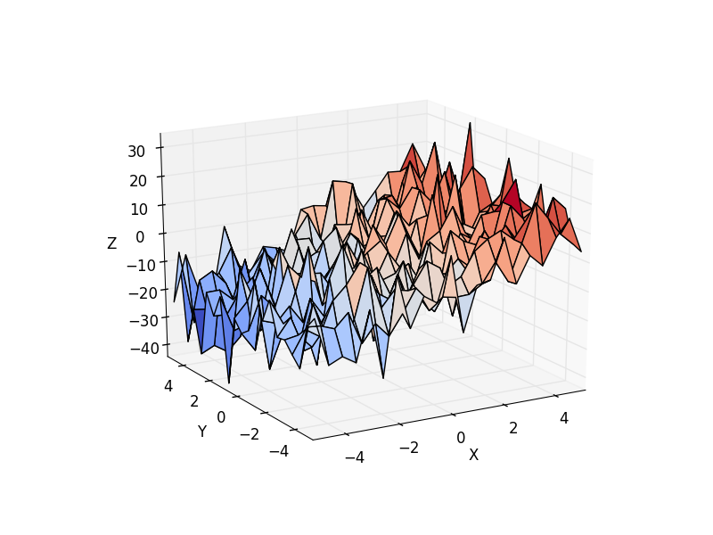

Calculate using ‘statsmodels’ just the best fit, or all the corresponding statistical parameters.
Also shows how to make 3d plots.
Script output:
OLS Regression Results
==============================================================================
Dep. Variable: z R-squared: 0.594
Model: OLS Adj. R-squared: 0.592
Method: Least Squares F-statistic: 320.4
Date: Sat, 07 Dec 2013 Prob (F-statistic): 1.89e-86
Time: 02:38:44 Log-Likelihood: -1537.7
No. Observations: 441 AIC: 3081.
Df Residuals: 438 BIC: 3094.
Df Model: 2
==============================================================================
coef std err t P>|t| [95.0% Conf. Int.]
------------------------------------------------------------------------------
Intercept -4.5052 0.378 -11.924 0.000 -5.248 -3.763
x 3.1173 0.125 24.979 0.000 2.872 3.363
y -0.5109 0.125 -4.094 0.000 -0.756 -0.266
==============================================================================
Omnibus: 0.260 Durbin-Watson: 2.057
Prob(Omnibus): 0.878 Jarque-Bera (JB): 0.204
Skew: -0.052 Prob(JB): 0.903
Kurtosis: 3.015 Cond. No. 3.03
==============================================================================
Retrieving manually the parameter estimates:
[-4.50523303 3.11734237 -0.51091248]
ANOVA results
df sum_sq mean_sq F PR(>F)
x 1 39284.301219 39284.301219 623.962799 2.888238e-86
y 1 1055.220089 1055.220089 16.760336 5.050899e-05
Residual 438 27576.201607 62.959364 NaN NaN
Python source code: plot_regression_3d.py
# Original author: Thomas Haslwanter
import numpy as np
import matplotlib.pyplot as plt
import pandas
# For 3d plots. This import is necessary to have 3D plotting below
from mpl_toolkits.mplot3d import Axes3D
# For statistics. Requires statsmodels 5.0 or more
from statsmodels.formula.api import ols
# Analysis of Variance (ANOVA) on linear models
from statsmodels.stats.anova import anova_lm
##############################################################################
# Generate and show the data
x = np.linspace(-5, 5, 21)
# We generate a 2D grid
X, Y = np.meshgrid(x, x)
# To get reproducable values, provide a seed value
np.random.seed(1)
# Z is the elevation of this 2D grid
Z = -5 + 3*X - 0.5*Y + 8 * np.random.normal(size=X.shape)
# Plot the data
fig = plt.figure()
ax = fig.gca(projection='3d')
surf = ax.plot_surface(X, Y, Z, cmap=plt.cm.coolwarm,
rstride=1, cstride=1)
ax.view_init(20, -120)
ax.set_xlabel('X')
ax.set_ylabel('Y')
ax.set_zlabel('Z')
##############################################################################
# Multilinear regression model, calculating fit, P-values, confidence
# intervals etc.
# Convert the data into a Pandas DataFrame to use the formulas framework
# in statsmodels
# First we need to flatten the data: it's 2D layout is not relevent.
X = X.flatten()
Y = Y.flatten()
Z = Z.flatten()
data = pandas.DataFrame({'x': X, 'y': Y, 'z': Z})
# Fit the model
model = ols("z ~ x + y", data).fit()
# Print the summary
print(model.summary())
print("\nRetrieving manually the parameter estimates:")
print(model._results.params)
# should be array([-4.99754526, 3.00250049, -0.50514907])
# Peform analysis of variance on fitted linear model
anova_results = anova_lm(model)
print('\nANOVA results')
print(anova_results)
plt.show()
Total running time of the example: 0.17 seconds ( 0 minutes 0.17 seconds)